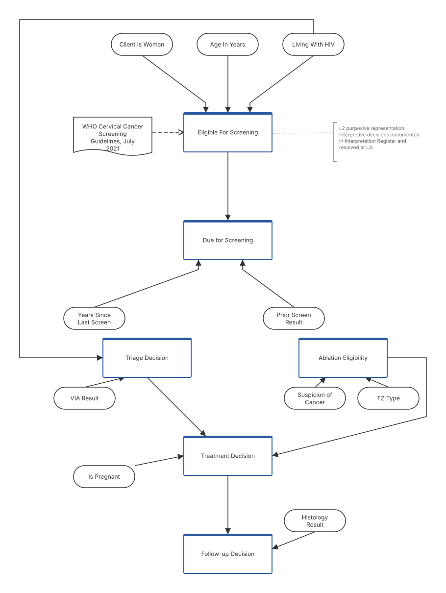
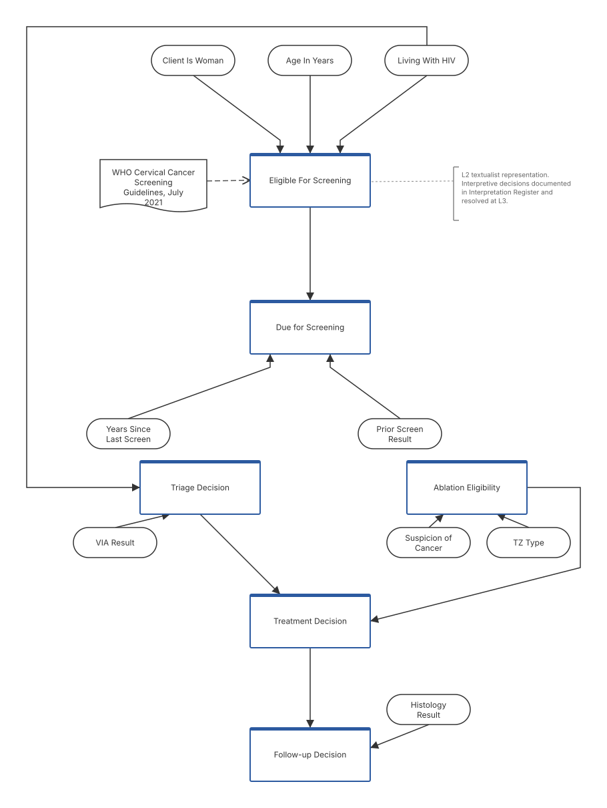
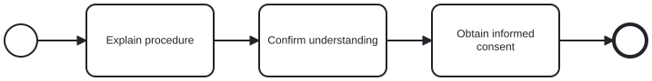
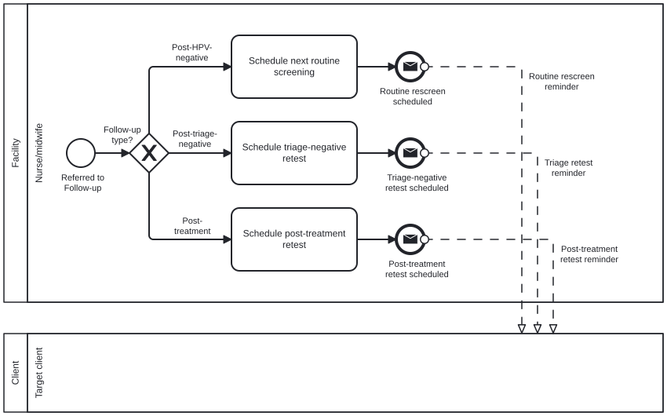
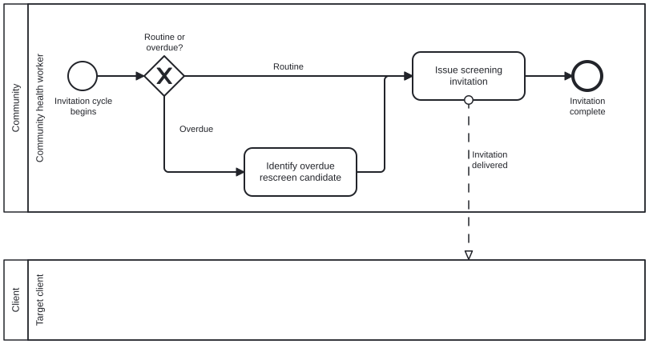
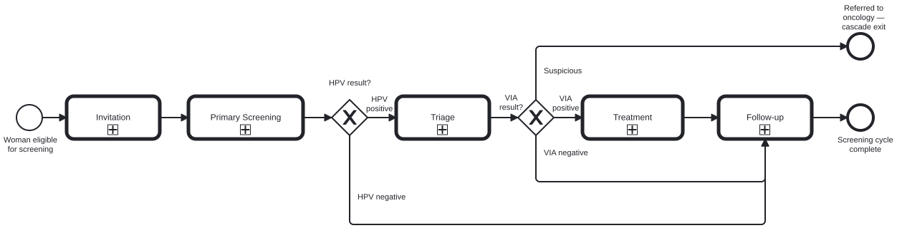
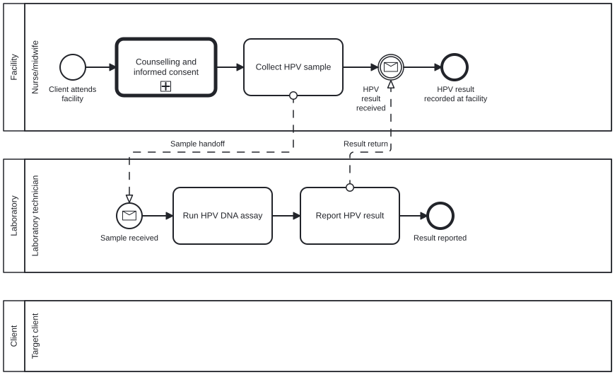
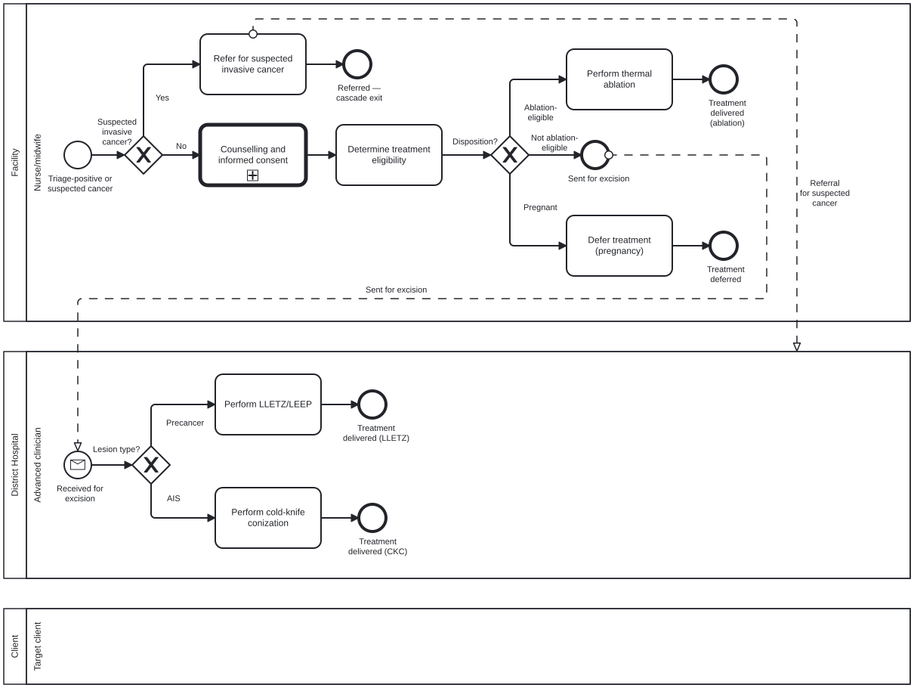
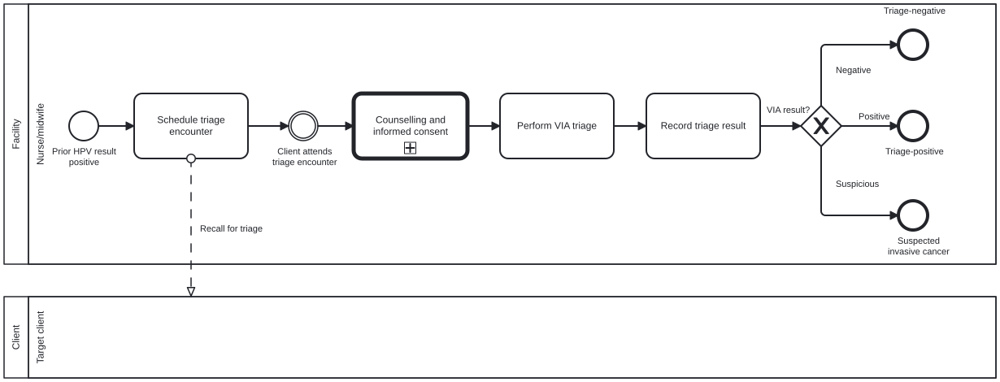

This fragment is available on dependencies.html
This publication includes IP covered under the following statements.
| Type | Reference | Content |
|---|---|---|
| web | github.com | WHO SMART DAK — Cervical Cancer Screening (L2), published by Dan Heslinga. This guide is not an authorized publication; it is the continuous build for version 0.1.0 built by the FHIR (HL7® FHIR® Standard) CI Build. This version is based on the current content of https://github.com/dhes/smart-dak-cervical-cancer/tree/main and changes regularly. See the Directory of published versions |
| web | github.com |
IG © 2026+ Dan Heslinga
. Package dhes.dak.cervical-cancer#0.1.0 based on FHIR 4.0.1
. Generated 2026-04-24
Links: Table of Contents | QA Report | Version History | License |
| web | github.com |
The harvest script at
dak-harvest/harvest-cdes.py
produced a flat per-DAK filtered index at
harvested-cdes-from-existing-daks.md
(harvest timestamp 2026-04-10). That index is the raw material; this CDD is the curated, structured, L2/L3-partitioned product that a country adaptation team could consume.
|
| web | github.com |
The harvest script at
dak-harvest/harvest-cdes.py
produced a flat per-DAK filtered index at
harvested-cdes-from-existing-daks.md
(harvest timestamp 2026-04-10). That index is the raw material; this CDD is the curated, structured, L2/L3-partitioned product that a country adaptation team could consume.
|
| web | github.com |
The CDD mirrors the SMART Guidelines DAK template column order as closely as markdown permits. See
authoring-workflow.md
lines 113–142 for the underlying boundary rule and
cross-dak-data-harmonization.md
line 50 for the canonical column list the template uses.
|
| web | github.com |
The CDD mirrors the SMART Guidelines DAK template column order as closely as markdown permits. See
authoring-workflow.md
lines 113–142 for the underlying boundary rule and
cross-dak-data-harmonization.md
line 50 for the canonical column list the template uses.
|
| web | github.com |
Three kinds of entries, per
smart-core-comments.md
Option 4 hybrid:
|
| web | github.com |
The methodology's
authoring-workflow.md
lines 113–142 prescribes a column-level boundary between L2 (what a clinical SME can validate) and L3 (what a terminology specialist or FHIR implementer binds). This CDD is the first artifact that exercises the boundary on real data rather than asserting it rhetorically.
|
| web | github.com |
Job 1 — Layer separation.
The one the methodology's
authoring-workflow.md
already articulates: clinical content (L2) is separable from FHIR and terminology binding (L3), so interpretive decisions made at L2 are not distorted by downstream implementation concerns. The register entries in the interpretation register
respect this rule;
cc-001
is the exemplar, with its inline terminology guidance deliberately omitted in favour of the per-row Terminology Intent
bridge column.
|
| web | github.com |
Job 1 — Layer separation.
The one the methodology's
authoring-workflow.md
already articulates: clinical content (L2) is separable from FHIR and terminology binding (L3), so interpretive decisions made at L2 are not distorted by downstream implementation concerns. The register entries in the interpretation register
respect this rule;
cc-001
is the exemplar, with its inline terminology guidance deliberately omitted in favour of the per-row Terminology Intent
bridge column.
|
| web | github.com |
Job 2 — Cross-DAK harmonization.
The one the published literature points at without a fully functioning mechanism: Pretty et al. (2023) recommend a "master spreadsheet that standardises data elements repeated across sections, to reduce the time and potential inconsistencies in coding";
smart-core-comments.md
observes that the smart-core repo was set up by the right people (Rhodes, Leitner, Costa Teixeira, Stevenson) but has been dormant since ~2021, so cross-DAK harmonization happens accidentally via per-DAK harvests rather than deliberately via a canonical shared dictionary. The L2/L3 boundary is what makes harvest-based sharing tractable: the L2 side of a harvested element is the portable part, and each DAK that references it can do its own L3 binding if needed.
|
| web | github.com |
Job 3 — Country-adaptation workflow.
The one Muliokela et al. (2025) implicitly surface but don't name explicitly. Their
3-muliokela.pdf
describes five-country pathfinder DAK adaptation work in Ethiopia, Ghana, Malawi, Zambia, and Zimbabwe. Their Table 2 names "the initial content adaptation process might require more time due to the volume of DAK elements" as a core challenge, and recommends "conducting preparatory steps, such as guideline extraction and premapping, to assess/select initial areas for adaptation, prior to stakeholder validation." Their Premapping Tool (Tool 3 in their Table 1) asks three questions of each DAK data element: does it already exist in the country's protocols/guidelines/registers; should it be added to the country-adapted DAK; does it need modifications.
|
| web | github.com |
The Kind 2 rows in this first pass have blank Source Commit
fields. This is a known gap inherited from the harvest script's current behaviour:
harvest-cdes.py
ingests xlsx files from a local xlsx/
directory and does not capture the source repository commit hashes at harvest time. The Option 4 hybrid in
smart-core-comments.md
names this as a required capability for versioning-discipline ("periodic re-harvest to detect upstream drift"), and the plan file for this work scopes the harvest-script extension as Phase B tooling. Until Phase B is undertaken, the Kind 2 rows in this CDD reference the source DAKs by DE ID and label only, and the snapshot is dated 2026-04-10 via the harvest file header.
|
| web | github.com |
The Kind 2 rows in this first pass have blank Source Commit
fields. This is a known gap inherited from the harvest script's current behaviour:
harvest-cdes.py
ingests xlsx files from a local xlsx/
directory and does not capture the source repository commit hashes at harvest time. The Option 4 hybrid in
smart-core-comments.md
names this as a required capability for versioning-discipline ("periodic re-harvest to detect upstream drift"), and the plan file for this work scopes the harvest-script extension as Phase B tooling. Until Phase B is undertaken, the Kind 2 rows in this CDD reference the source DAKs by DE ID and label only, and the snapshot is dated 2026-04-10 via the harvest file header.
|
| web | github.com |
authoring-workflow.md
lines 113–142 — the underlying L2/L3 boundary rule.
|
| web | github.com |
cross-dak-data-harmonization.md
— the published-literature synthesis on cross-DAK harmonization (Pretty, Tamrat, Mehl, Muliokela, GUIDE).
|
| web | github.com |
smart-core-comments.md
— the Option 4 hybrid and the dormant-smart-core observation.
|
| web | github.com |
harvest-cdes.py
— the harvest script that produced the raw per-DAK index this CDD curates.
|
| web | github.com |
harvested-cdes-from-existing-daks.md
— the harvest snapshot (2026-04-10) that the Kind 2 rows draw from.
|
| web | github.com |
Interpretation register
— the interpretation register, which this CDD cross-references row-by-row. Its IG-rendered counterparts are
cc-000
through
cc-007
.
|
| web | www.who.int | WHO 2021 (July): WHO guideline for screening and treatment of cervical pre-cancer lesions for cervical cancer prevention, second edition. Geneva: World Health Organization; 2021. ISBN 9789240030824. WHO publication page |
| web | www.who.int | WHO 2021 (December): WHO guideline for screening and treatment of cervical pre-cancer lesions for cervical cancer prevention, second edition: use of mRNA tests for human papillomavirus (HPV). Geneva: World Health Organization; 2021. ISBN 9789240040434. WHO publication page |
| web | www.who.int | WHO 2024 (June): WHO guideline for screening and treatment of cervical pre-cancer lesions for cervical cancer prevention: use of dual-stain cytology to triage women after a positive test for human papillomavirus (HPV). Geneva: World Health Organization; 2024. ISBN 9789240091658. WHO publication page |
| web | github.com |
Muliokela et al. 2024a:
Muliokela RK, Banda K, Hussen AM, et al. Implementation of WHO SMART Guidelines-Digital Adaptation Kits in Pathfinder Countries in Africa: Processes and Early Lessons Learned. JMIR Medical Informatics
.
../../../methodology/publications/3-muliokela.pdf
. Countries: Ethiopia, Ghana, Malawi, Zambia, Zimbabwe.
|
| web | github.com |
Muliokela et al. 2022:
Muliokela R, Uwayezu G, Tran Ngoc C, et al. Integration of new digital antenatal care tools using the WHO SMART guideline approach: Experiences from Rwanda and Zambia. Digital Health
. 2022;8. DOI: 10.1177/20552076221076256.
../../../methodology/publications/4-muliokela.pdf
. Countries: Rwanda, Zambia.
|
| web | github.com |
Tamrat et al. 2025:
Tamrat T, Muliokela RK, Hussen AM, et al. The Guideline Uptake in Digital Ecosystems (GUIDE) study: protocol for implementation research on the impact of WHO SMART guidelines digital adaptation kits to improve quality of care. Health Research Policy and Systems
. 2025;23:122. DOI: 10.1186/s12961-025-01397-7.
../../../methodology/publications/5-tamrat-et-al.pdf
. Countries: Ethiopia, Ghana.
|
| web | smart.who.int | Per Section 3.1 of the SOP , a business process is "a set of related activities or tasks performed together to achieve the objectives of the health programme area." A workflow is the visual representation of one such process, showing "the progression of activities (tasks, decision points, interactions)" through its participants. The component's two required deliverables are an overview matrix of the processes and workflow diagrams for each process, annotated, following BPMN 2.0 notation. |
| web | camunda.com |
Tooling.
Camunda Modeler
(free, desktop, offline). Open the .bpmn
file, edit visually, save. Export to SVG via File → Save File As… → .svg
, writing to input/images/
. Commit both the updated .bpmn
and the regenerated .svg
.
|
| web | github.com |
WHO December 2021 mRNA addendum — reconciliation complete.
The 2024-06 publication reprints its 12-month post-treatment follow-up flow (Annex 4, page 42) citing the 2021-12 mRNA addendum as the source, which raised the question whether 2021-12 had modified the post-treatment follow-up algorithm that was in 2021-07 for the HPV DNA + VIA path. The narrow reconciliation is documented at
addendum-2021-12-reconciliation.md (see [source repo](https://github.com/dhes/dak-authoring-methodology/blob/main/case-studies/cervical-cancer/narrative/addendum-2021-12-reconciliation.md))
. Findings: 2021-12 adds HPV mRNA as an alternative primary screening test for the general population only, with 5-year intervals, with or without triage; its Chapter 3 makes no changes to any 2021-07 recommendation; its Annex 5 reprints Rec 13 (general-population post-treatment follow-up) and Rec 33 (WLHIV "double follow-up") verbatim; its Annex 4 p.44 reprints the 2021-07 p.71 general-population post-treatment follow-up flow with only minor phrasing generalization to accommodate mRNA's 5-year interval; and it does not reprint the 2021-07 p.72 WLHIV-specific post-treatment follow-up flow at all. No textualist DMN correction is required on account of 2021-12. A pre-existing WLHIV "double follow-up" fidelity gap in the textualist was confirmed during the reconciliation — it originates in the 2021-07 reading, not in any addendum, and is tracked as a future register-entry candidate (see index.md
"Deferred and out of scope").
|
| web | semver.org |
This page lists the versions of this IG with a brief description of the major changes in each. Versions follow Semantic Versioning
— major.minor.patch
.
|
| web | smart.who.int | Standard Operating Procedure — WHO's prescriptive authoring process for SMART Guidelines. The L2 SOP is at smart.who.int/ig-starter-kit/l2_dak_authoring.html . |
| web | www.who.int | The WHO Cervical Cancer Elimination Strategy 's targets: 90% of girls HPV-vaccinated by age 15; 70% of women screened with a high-performance test by ages 35 and 45; 90% of women with precancer treated and 90% of women with invasive cancer managed. |
| web | github.com |
Status.
First pass, 2026-04-11. Drafted from the harvest snapshot at
../narrative/harvested-cdes-from-existing-daks.md
(harvested 2026-04-10). Kind 2 rows do not carry source commit hashes in this first pass; the commit-hash backfill is Phase B work per silly-gathering-flamingo.md
(local plan file, not published) (the plan file in the user's local Claude state — not a committed project artifact, but the decision record for this work).
|
| web | github.com |
L2/L3 boundary discipline.
Every L3 column below (ICD-11, SNOMED CT, LOINC, ICHI, ICF, FHIR Resource, FHIR Profile, Canonical URI) is intentionally blank. These are L3 concerns — to be bound by a terminology specialist or FHIR implementer at the point of country adaptation — and leaving them blank is a feature, not an omission. The per-row Terminology Intent
column carries natural-language meaning to inform but not prescribe the L3 binding. See
../../../methodology/authoring-workflow.md#the-l2-boundary-rule
lines 113–142.
|
| web | github.com |
Terminology Intent:
Whether the client is a person living with HIV at the time of the screening encounter. A true
value triggers the WLHIV-specific screening-age threshold (25 rather than 30) and interval (3–5 years rather than 5–10 years) per 2021-07 Recommendations 21 and 22, and the WLHIV-specific post-treatment follow-up schedule per Recommendation 33 (the "double follow-up" — see
addendum-2021-12-reconciliation.md (see [source repo](https://github.com/dhes/dak-authoring-methodology/blob/main/case-studies/cervical-cancer/narrative/addendum-2021-12-reconciliation.md))
).
|
| web | github.com |
Annotations:
Histopathology may not be available in some settings; the 2021-07 guideline's post-treatment follow-up flow (p.71, general pop; p.72, WLHIV) explicitly handles the "treated with ablation or LLETZ without histopathology results available" case. The textualist does not currently model the null-histology branch explicitly; this is a fidelity gap independent of this first-pass CDD and is adjacent to the pre-existing WLHIV double-follow-up gap confirmed in
addendum-2021-12-reconciliation.md (see [source repo](https://github.com/dhes/dak-authoring-methodology/blob/main/case-studies/cervical-cancer/narrative/addendum-2021-12-reconciliation.md))
.
|
| web | github.com |
Annotations:
The "post-treatment follow-up after 1 year" output is the first 12-month check after treatment; for the general population this returns to routine on negative, for WLHIV there is a second 12-month check per 2021-07 Rec 33 ("double follow-up") that the textualist does not currently encode — see
addendum-2021-12-reconciliation.md (see [source repo](https://github.com/dhes/dak-authoring-methodology/blob/main/case-studies/cervical-cancer/narrative/addendum-2021-12-reconciliation.md))
for the confirmed fidelity gap.
|
| web | github.com | The working repository for this DAK (including test fixtures, narrative analysis documents, and the full methodology) is at github.com/dhes/dak-authoring-methodology . |
| web | smart.who.int | A persona is not a specific person. It is a generic, composite role description synthesised from many lived working contexts — what that role typically knows (competencies), what that role typically does in the cascade (essential interventions performed), and where that role fits in the care pathway (description). Each entry on this page follows the three content elements required by Section 3.1 of the WHO SMART Guidelines L2 DAK SOP : description, competencies, and essential interventions performed. |
| web | semver.org |
This IG follows Semantic Versioning 2.0.0
: major.minor.patch
. All FHIR artifacts defined in the IG inherit the IG's version number. Material changes to any artifact trigger a patch bump; backwards-incompatible changes trigger a major bump. See the Change Log
for version history.
|
| web | www.who.int | This implementation guide presents Layer 2 (decision logic) artifacts for cervical cancer screening, modelling Algorithm 5 (HPV DNA primary screening with VIA triage) from the WHO 2021 Cervical Cancer Screening Guideline (2nd ed.) . |
| web | smart.who.int |
This DAK repackages and integrates the WHO 2021 Cervical Cancer Screening Guideline into L2 artifacts per Section 3.1 of the WHO SMART Guidelines IG Starter Kit
. The interpretive choices made during repackaging are documented as register entries ( cc-000
through cc-008
); the two interpretive strategies applied — textualist and purposive — are explained on the Methodology
page.
|
| web | smart.who.int | Per Section 3.1 of the SOP , Component 8 is a "core set of indicators that need to be aggregated for decision-making, performance metrics, and subnational and national reporting, based on data that can feasibly be captured from a routine digital system, rather than survey-based tools." Its organising principle is collect once, use many — indicators should reuse cascade data elements already captured in the course of clinical work, not require separate data collection exercises. |
| web | www.who.int | ISBN 9789240030824. WHO publication page |
| web | www.who.int | ISBN 9789240040434. WHO publication page |
| web | www.who.int | ISBN 9789240091658. WHO publication page |
| web | publications.iarc.who.int | IARC publication page |
| web | www.who.int | WHO publication page |
| web | www.who.int | This section will list the clinical interventions repackaged by this DAK, with their identifiers from the WHO UHC Compendium and the cascade step at which each is invoked. Anticipated entries: |
| web | www.who.int | This section will classify the DAK's functional contribution using the WHO Classification of Digital Health Interventions (CDHI) v1.0, 2018 . Anticipated entries: |
| web | dhes.github.io | Heslinga, D. WHO SMART DAK — Cervical Cancer Screening (L2), version 0.1.0. Available at https://dhes.github.io/smart-dak-cervical-cancer , licensed under CC-BY-4.0. |
| web | creativecommons.org | Human-readable summary: https://creativecommons.org/licenses/by/4.0/ |
| web | creativecommons.org | Legal code: https://creativecommons.org/licenses/by/4.0/legalcode |
| web | smart.who.int | Per Section 3.1 of the SOP , Component 9 is "a high-level list of core functions and capabilities that the system must have to meet the end users' needs and achieve tasks within the business process." Its purpose is "system design to know what the system should be able to do." |
| web | smart.who.int | Per Section 3.1 of the SOP , Component 7 covers "the timing rules that drive reminders, next-appointment scheduling, and follow-up intervals." It is adjacent to but distinct from Component 6 (decision logic), which handles clinical decisions like eligibility and triage disposition. |
| web | smart.who.int | A user scenario, in SMART DAK terms, is an illustrative narrative — not a formal use case with preconditions and postconditions. Per Section 3.1 of the SOP , scenarios "describe typical interactions that one would expect to happen in the specific health programme area" and are "only illustrative and intended to give an idea of a typical workflow." Their authoring weight sits on typicality and realism , not on taxonomic completeness. |
|
drd-purposive.svg  |
|
drd-textualist.svg  |
|
subprocess-counselling-consent.svg  |
|
workflow-follow-up.svg  |
|
workflow-invitation.svg  |
|
workflow-overview.svg  |
|
workflow-primary-screening.svg  |
|
workflow-treatment.svg  |
|
workflow-triage.svg  |